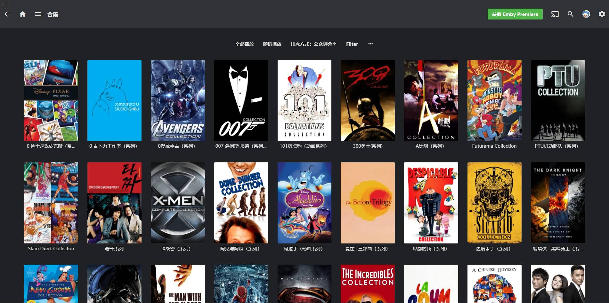

在你谷歌云盘根目录新建如下目录，\高清库\电影\
把之前转存的所有电影，全部移动到到\电影\目录内：
如：L:\高清库\电影\(9.3分)-肖申克的救赎(1994)\
用RaiDrive或者其他工具，把你的谷歌硬盘挂载到L盘，（对 必须是L盘）
服务器程序在 Emby\system\EmbyServer.exe
双击运行即可，
默认已经刮削好了之前分享的所有电影的海报和媒体信息，
并且还分了各种电影合集系列，比如你们要的周星驰系列啊，哈利波特系列啊，漫威宇宙全集啊等等。
如果你已经转存完毕，按上面的操作挂载好了文件夹。 那么，你将直接拥有一个全平台通用的，赏心悦目的媒体库。
直接用数据包比你自己折腾配置，可以帮你节省至少1礼拜的维护时间，以及20T的Vps流量。 更多请自行探索（不懂不要私我），Enjoy
